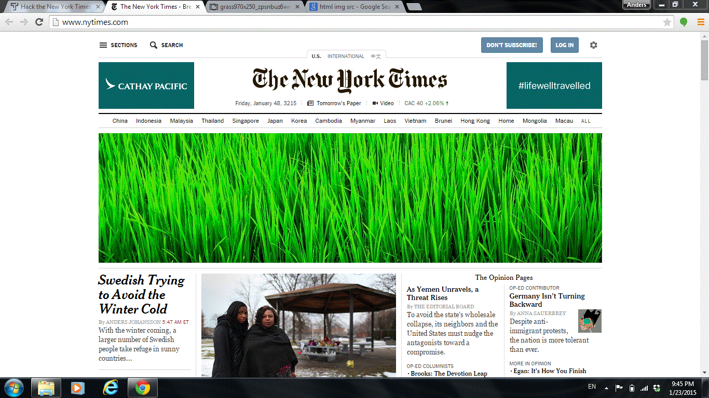

-

New York Times remake
-
Landing page
My name is Anders and I am a researcher and web designer. Based in Stockholm and Hong Kong, I work on issues related to the role of social media in society and create visually striking and appealing websites.